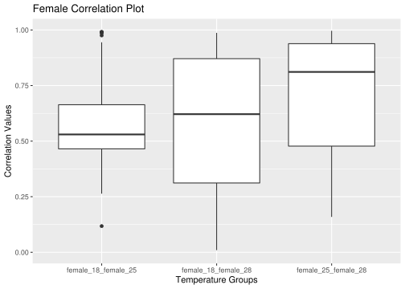
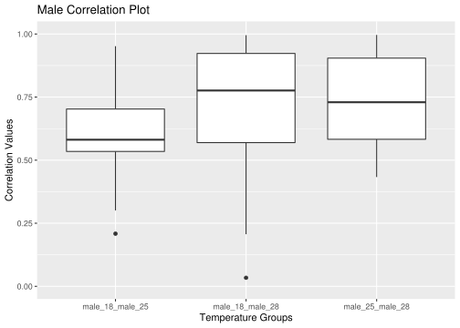
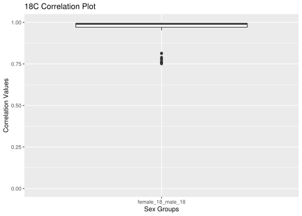
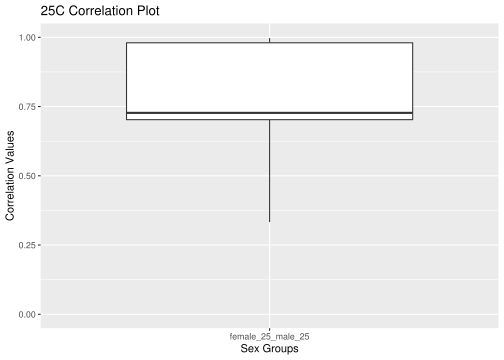
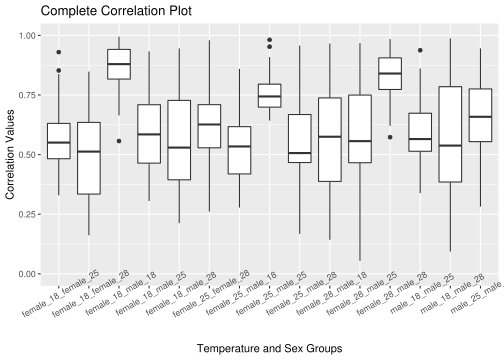

Last updated: 2022-03-24
Checks: 7 0
Knit directory: CoyneProject/
This reproducible R Markdown analysis was created with workflowr (version 1.7.0). The Checks tab describes the reproducibility checks that were applied when the results were created. The Past versions tab lists the development history.
Great! Since the R Markdown file has been committed to the Git repository, you know the exact version of the code that produced these results.
Great job! The global environment was empty. Objects defined in the global environment can affect the analysis in your R Markdown file in unknown ways. For reproduciblity it’s best to always run the code in an empty environment.
The command set.seed(20220228) was run prior to running the code in the R Markdown file. Setting a seed ensures that any results that rely on randomness, e.g. subsampling or permutations, are reproducible.
Great job! Recording the operating system, R version, and package versions is critical for reproducibility.
Nice! There were no cached chunks for this analysis, so you can be confident that you successfully produced the results during this run.
Great job! Using relative paths to the files within your workflowr project makes it easier to run your code on other machines.
Great! You are using Git for version control. Tracking code development and connecting the code version to the results is critical for reproducibility.
The results in this page were generated with repository version 9421197. See the Past versions tab to see a history of the changes made to the R Markdown and HTML files.
Note that you need to be careful to ensure that all relevant files for the analysis have been committed to Git prior to generating the results (you can use wflow_publish or wflow_git_commit). workflowr only checks the R Markdown file, but you know if there are other scripts or data files that it depends on. Below is the status of the Git repository when the results were generated:
Ignored files:
Ignored: .RData
Ignored: .Rproj.user/
Unstaged changes:
Modified: analysis/Background.Rmd
Modified: analysis/style.css
Note that any generated files, e.g. HTML, png, CSS, etc., are not included in this status report because it is ok for generated content to have uncommitted changes.
These are the previous versions of the repository in which changes were made to the R Markdown (analysis/Correlations.Rmd) and HTML (docs/Correlations.html) files. If you’ve configured a remote Git repository (see ?wflow_git_remote), click on the hyperlinks in the table below to view the files as they were in that past version.
| File | Version | Author | Date | Message |
|---|---|---|---|---|
| Rmd | 9421197 | kcoyne998 | 2022-03-24 | details |
| html | f95e48a | kcoyne998 | 2022-03-24 | Build site. |
| Rmd | 52457a0 | kcoyne998 | 2022-03-24 | details |
| html | 1a03593 | kcoyne998 | 2022-03-24 | Build site. |
| Rmd | dee94e0 | kcoyne998 | 2022-03-24 | Additional background |
| html | 84f7f0b | kcoyne998 | 2022-03-24 | Build site. |
| Rmd | 61d1a5c | kcoyne998 | 2022-03-24 | Additional background |
| html | 2854288 | kcoyne998 | 2022-03-24 | Build site. |
| Rmd | d64e62b | kcoyne998 | 2022-03-24 | Additional background |
| html | 4ca2dfc | kcoyne998 | 2022-03-24 | Build site. |
| Rmd | 97263e3 | kcoyne998 | 2022-03-24 | Additional background |
The results of the univariate and multivariate analysis methods did not show a significant improvement in the multivariate method. The next step of this project is to determine if there is a correlation between the phenotypes. If there is no correlation, then it makes sense that the multivariate analysis did not yield better results than univariate analysis. If there is correlation then the data needs to be reanalyzed. Below are the plots for the correlation for every phenotypic comparison. On the x-axis the labels give the two categories of phenotypes being analyzed. For example female_18_female_25 is the correlation between the lifespan for a female in the 18oC environment and the lifespan for a female in the 25oC environment. The y-axis is the correlation value on a 0-1 scale.
library(ggplot2)
###Reading in results
rg_res_female <- readRDS("/data/morgante_lab/kcoyne/mv_project/results/gblup_vs_mvgblup_drosophila_rg_female.rds")
###Objects for the rg data
female_18_female_25 = as.data.frame(rg_res_female$female_18_female_25)
colnames(female_18_female_25) = "female_18_female_25"
female_18_female_28 = as.data.frame(rg_res_female$female_18_female_28)
colnames(female_18_female_28) = "female_18_female_28"
female_25_female_28 = as.data.frame(rg_res_female$female_25_female_28)
colnames(female_25_female_28) = "female_25_female_28"
###COMBINE AND STACK
female_rg <- cbind(female_18_female_25,
female_18_female_28,
female_25_female_28)
female_rg <- stack(female_rg)
###Make Female Boxplot
boxplot_female <- ggplot(female_rg, aes(x=ind, y=values))+
geom_boxplot()+
labs(title = 'Female Correlation Plot', x = 'Temperature Groups', y = 'Correlation Values')+
scale_y_continuous(limits=c(0,1))
boxplot_femaleWarning: Removed 1 rows containing non-finite values (stat_boxplot).
library(ggplot2)
###Reading in results
rg_res_male <- readRDS("/data/morgante_lab/kcoyne/mv_project/results/gblup_vs_mvgblup_drosophila_rg_male.rds")
###Objects for the rg data
male_18_male_25 = as.data.frame(rg_res_male$male_18_male_25)
colnames(male_18_male_25) = "male_18_male_25"
male_18_male_28 = as.data.frame(rg_res_male$male_18_male_28)
colnames(male_18_male_28) = "male_18_male_28"
male_25_male_28 = as.data.frame(rg_res_male$male_25_male_28)
colnames(male_25_male_28) = "male_25_male_28"
male_rg <- cbind(male_18_male_25,
male_18_male_28,
male_25_male_28)
male_rg <- stack(male_rg)
###Make All Boxplot
boxplot_male <- ggplot(male_rg, aes(x=ind, y=values))+
geom_boxplot()+
labs(title = 'Male Correlation Plot', x = 'Temperature Groups', y = 'Correlation Values')+
scale_y_continuous(limits=c(0,1))
boxplot_maleWarning: Removed 3 rows containing non-finite values (stat_boxplot).
library(ggplot2)
###Reading in results
rg_res_18c <- readRDS("/data/morgante_lab/kcoyne/mv_project/results/gblup_vs_mvgblup_drosophila_rg_18c.rds")
###Objects for the rg data
female_18_male_18 = as.data.frame(rg_res_18c$female_18_male_18)
colnames(female_18_male_18) = "female_18_male_18"
temp18c_rg <- cbind(female_18_male_18)
temp18c_rg <- stack(temp18c_rg)
###Make All Boxplot
boxplot_18c <- ggplot(temp18c_rg, aes(x=ind, y=values))+
geom_boxplot()+
labs(title = '18C Correlation Plot', x = 'Sex Groups', y = 'Correlation Values')+
scale_y_continuous(limits=c(0,1))
boxplot_18cWarning: Removed 1 rows containing non-finite values (stat_boxplot).
library(ggplot2)
###Reading in results
rg_res_25c <- readRDS("/data/morgante_lab/kcoyne/mv_project/results/gblup_vs_mvgblup_drosophila_rg_25c.rds")
###Objects for the rg data
female_25_male_25 = as.data.frame(rg_res_25c$female_25_male_25)
colnames(female_25_male_25) = "female_25_male_25"
temp25c_rg <- cbind(female_25_male_25)
temp25c_rg <- stack(temp25c_rg)
###Make All Boxplot
boxplot_25c <- ggplot(temp25c_rg, aes(x=ind, y=values))+
geom_boxplot()+
labs(title = '25C Correlation Plot', x = 'Sex Groups', y = 'Correlation Values')+
scale_y_continuous(limits=c(0,1))
boxplot_25c
library(ggplot2)
###Reading in results
rg_res_28c <- readRDS("/data/morgante_lab/kcoyne/mv_project/results/gblup_vs_mvgblup_drosophila_rg_28c.rds")
###Objects for the rg data
female_28_male_28 = as.data.frame(rg_res_28c$female_28_male_28)
colnames(female_28_male_28) = "female_28_male_28"
temp28c_rg <- cbind(female_28_male_28)
temp28c_rg <- stack(temp28c_rg)
###Make All Boxplot
boxplot_28c <- ggplot(temp28c_rg, aes(x=ind, y=values))+
geom_boxplot()+
labs(title = '28C Correlation Plot', x = 'Sex Groups', y = 'Correlation Values')+
scale_y_continuous(limits=c(0,1))
boxplot_28c
library(ggplot2)
###Reading in results
rg_res <- readRDS("/data/morgante_lab/kcoyne/mv_project/results/gblup_vs_mvgblup_drosophila_rg.rds")
###Objects for the rg data
female_18_female_25 = as.data.frame(rg_res$female_18_female_25)
colnames(female_18_female_25) = "female_18_female_25"
female_18_female_28 = as.data.frame(rg_res$female_18_female_28)
colnames(female_18_female_28) = "female_18_female_28"
female_18_male_18 = as.data.frame(rg_res$female_18_male_18)
colnames(female_18_male_18) = "female_18_male_18"
female_18_male_25 = as.data.frame(rg_res$female_18_male_25)
colnames(female_18_male_25) = "female_18_male_25"
female_18_male_28 = as.data.frame(rg_res$female_18_male_28)
colnames(female_18_male_28) = "female_18_male_28"
female_25_female_28 = as.data.frame(rg_res$female_25_female_28)
colnames(female_25_female_28) = "female_25_female_28"
female_25_male_18 = as.data.frame(rg_res$female_25_male_18)
colnames(female_25_male_18) = "female_25_male_18"
female_25_male_25 = as.data.frame(rg_res$female_25_male_25)
colnames(female_25_male_25) = "female_25_male_25"
female_25_male_28 = as.data.frame(rg_res$female_25_male_28)
colnames(female_25_male_28) = "female_25_male_28"
female_28_male_18 = as.data.frame(rg_res$female_28_male_18)
colnames(female_28_male_18) = "female_28_male_18"
female_28_male_25 = as.data.frame(rg_res$female_28_male_25)
colnames(female_28_male_25) = "female_28_male_25"
female_28_male_28 = as.data.frame(rg_res$female_28_male_28)
colnames(female_28_male_28) = "female_28_male_28"
male_18_male_25 = as.data.frame(rg_res$male_18_male_25)
colnames(male_18_male_25) = "male_18_male_25"
male_18_male_28 = as.data.frame(rg_res$male_18_male_28)
colnames(male_18_male_28) = "male_18_male_28"
male_25_male_28 = as.data.frame(rg_res$male_25_male_28)
colnames(male_25_male_28) = "male_25_male_28"
all_rg <- cbind(female_18_female_25,
female_18_female_28,
female_18_male_18,
female_18_male_25,
female_18_male_28,
female_25_female_28,
female_25_male_18,
female_25_male_25,
female_25_male_28,
female_28_male_18,
female_28_male_25,
female_28_male_28,
male_18_male_25,
male_18_male_28,
male_25_male_28)
stack_all_rg <- stack(all_rg)
###Make All Boxplot
boxplot_all <- ggplot(stack_all_rg, aes(x=ind, y=values))+
geom_boxplot()+
labs(title = 'Complete Correlation Plot', x = 'Temperature and Sex Groups', y = 'Correlation Values')+
theme(axis.text.x = element_text(angle = 30))+
scale_y_continuous(limits=c(0,1))
boxplot_allWarning: Removed 8 rows containing non-finite values (stat_boxplot).
sessionInfo()R version 4.0.3 (2020-10-10)
Platform: x86_64-pc-linux-gnu (64-bit)
Running under: CentOS Linux 7 (Core)
Matrix products: default
BLAS/LAPACK: /opt/ohpc/pub/Software/openblas_0.3.10/lib/libopenblas_haswellp-r0.3.10.dev.so
locale:
[1] LC_CTYPE=en_US.UTF-8 LC_NUMERIC=C
[3] LC_TIME=en_US.UTF-8 LC_COLLATE=en_US.UTF-8
[5] LC_MONETARY=en_US.UTF-8 LC_MESSAGES=en_US.UTF-8
[7] LC_PAPER=en_US.UTF-8 LC_NAME=C
[9] LC_ADDRESS=C LC_TELEPHONE=C
[11] LC_MEASUREMENT=en_US.UTF-8 LC_IDENTIFICATION=C
attached base packages:
[1] stats graphics grDevices utils datasets methods base
other attached packages:
[1] ggplot2_3.3.5 workflowr_1.7.0
loaded via a namespace (and not attached):
[1] tidyselect_1.1.1 xfun_0.29 bslib_0.3.1 purrr_0.3.4
[5] colorspace_2.0-2 vctrs_0.3.8 generics_0.1.1 htmltools_0.5.2
[9] yaml_2.2.2 utf8_1.2.2 rlang_1.0.1 jquerylib_0.1.4
[13] later_1.3.0 pillar_1.6.4 glue_1.6.0 withr_2.4.3
[17] DBI_1.1.2 lifecycle_1.0.1 stringr_1.4.0 munsell_0.5.0
[21] gtable_0.3.0 evaluate_0.14 labeling_0.4.2 knitr_1.37
[25] callr_3.7.0 fastmap_1.1.0 httpuv_1.6.5 ps_1.6.0
[29] fansi_1.0.2 highr_0.9 Rcpp_1.0.8 promises_1.2.0.1
[33] scales_1.1.1 jsonlite_1.7.3 farver_2.1.0 fs_1.5.2
[37] digest_0.6.29 stringi_1.7.6 processx_3.5.2 dplyr_1.0.8
[41] getPass_0.2-2 rprojroot_2.0.2 grid_4.0.3 cli_3.1.1
[45] tools_4.0.3 magrittr_2.0.2 sass_0.4.0 tibble_3.1.6
[49] crayon_1.4.2 whisker_0.4 pkgconfig_2.0.3 ellipsis_0.3.2
[53] assertthat_0.2.1 rmarkdown_2.11 httr_1.4.2 rstudioapi_0.13
[57] R6_2.5.1 git2r_0.29.0 compiler_4.0.3